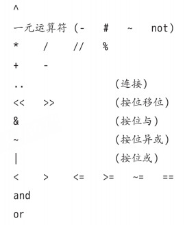

基础中的基础
一些知识点：
chunk ---程序块，为一连串的语句或命令- Lua区分大小写
- 未初始化的变量可以直接访问，为nil
- 不添加前缀就是
全局变量 ，添加local前缀就是局部变量 - 索引起始值为1(否则某些机制无法使用)
a = a or 0，一种默认值的设置方式zip = (address or {}).zipcode，一种类的安全访问的方式- Lua支持多重赋值，如
a, b = 10, 2*10所以：a,b,c = 0是不对的，应该为a,b,c = 0,0,0 x, y = y, x，一种交换的方式核心：多重赋值+先求值再赋值 - 通过
do ... end添加块类似与C#的 { ... }
由此可以创建出不污染全局的局部变量：
foo = 10 do --创建局部的foo，在此之后end之前foo都是局部的 local foo = foo foo = 1 print(foo) -- 局部，得1 end print(foo) -- 全局，得10
数据类型
在Lua中有以下类型：
nil | boolean | number | string | userdata | function | thread | table
number
在5.3之前：
所有数值都是双精度浮点格式
在5.3之后：
integer-64位整型 | float-双精度浮点类型
(可以通过Small Lua模式
Tip：
- 可以通过
math.maxinteger/math.mininteger表示整型的最大值/最小值 - 可以通过
math.huge/-math.huge表示浮点型的最大值/最小值 - 整型转浮点型可以通过+0.0
如： -3+0.0为-3.0 - 浮点型转整型，有两种方式：按位或 |
math.tointeger()
两种都会进行检查：Tip：默认情况下任何数值都为浮点型 2^53 | 0为90071992547409923.2 | 0不可以，因为3.2和3不相等，Lua拒绝转换 2^64 | 0不可以，超范围了
- 大于2^53的整型转浮点型会造成精度损失
- 浮点型强转整型的话可以改造以下函数：
``` lua
function cond2int(x)
-- 转换失败会返回nil，那么失败就还原
return math.tointeger(x) or x
end
```
优先级如下所示：

结合律如下所示：
除了
^和..与一元运算符为右结合，其余皆为左结合
string
单行注释-----
多行注释---[[ ... ]] @
- string转其它类型---toXXX()
如： tonumber() - 其它类型转string：
tostring()xx .. ""即添加空字符串
对于string来说，有2个库：
string库 ---对ASCII操作 utf8库 ---对utf8操作 lua5.3新增
string.len()会以字节为单位)
table
table具有唯一的创建方式，即{}
具体来说有：
- 1.
days = {"Sunday", "Monday"} - 2.
a = {x=10, y=20} - 3.
opnames = {["+"] = "add", ["-"] = "sub"}可以使用负数
我们可以认为1/2形式其实是3形式的语法糖
语法糖：a["name"] == a.name
{[0] = 0, 1, 2, 3, 4}
Tip：分割不仅可以是,，还可以是;，在某些时候可以起到小分割与大分割的作用t = {x=10, y=45; "one", "two", "three"}
nil是数组结尾的标志，有：
a = {}
a[10000] = 1
print(#a) -- 0，按理来说应该是1
由此，我们可以编写一个
-- 通过pairs进行完整遍历，输出完整长度
local function len(x)
local n = 0;
for k,v in pairs(x) do
n = n + 1
end
return n
end
function
一般函数的形式为：print("OK")
但是存在一种特例：print("OK")--->print "OK" require("a")--->require "a"
在Lua中，参数列表是不需要匹配的：
- 假如多传参了，那么多的就会丢弃，
- 假如少传参了，那么少的就会置为nil
由此可以应用在如下情况：
function incCount(n)
-- n可以不传，不传就设默认值1
n = n or 1
count = count + n
end
多返回值
function foo() return "a", "b" end
关键点：
function foo0() end
function foo2() return "a", "b" end
x = foo2() -- x="a"，"b"被丢弃
x,y,z = foo2() -- x="a"，y="b"，z未赋值为nil
x,y = foo2(), 20 -- x="a"(只取第一个"a"，"b"被丢弃了)， y=20
x,y = foo0(), 20, 30 -- x=nil(foo0赋值的)，y=20，30被丢弃
print(foo2()) -- a b
print(foo2(), 1) -- a 1
-- table同理
t = {foo0(), foo2(), 4} -- [1]=nil [2]="a" [3]=4
Tip：括号能使多返回值函数只返回1个值
function multipleReturns()
return 1, 2, 3
end
local t1 = {multipleReturns()} -- t1 = {1, 2, 3}
local t2 = {(multipleReturns())} -- t2 = {1}
-- 实用例子
local s = "Hello, world!"
local firstComma = (string.find(s, ",")) -- 只返回第一个分割字符串
print(firstComma) -- 输出: 6
变长参数
简单来说，变长参数就是...
-- 加法函数
function add(...)
local s = 0
for i,v in ipairs{...} do
s = s + v
end
return s
end
print(add(3,4,10,25,12)) -- 54
ipairs{...}，不应该是ipairs(table)吗ipairs({...})，也就是构建了一个table传入，那么我们也能发现：ipairs其实是一个函数
两种逻辑：
local a, b = ...---多返回值{...}---多返回值组成table
-- 1.跟踪函数
-- 相当于嵌套了一层，可以再运行前先进行一定的操作
function foo1(...)
print("calling foo:", ...)
return foo(...)
end
-- 2.组合
-- io.write():一种更原始的print()，不会添加换行符，
-- 也不会在参数间添加制表符，也不会自动刷新缓冲区(换行就会刷新(好像))
function fwrite(fmt, ...)
return io.write(string.format(fmt, ...))
end
fwrite("%d%d", 4, 5) -- 输出45
对于变长参数来说，有一函数会比较有用，即select()：
select("#", ...)此时，会获取参数数量 select(n, ...)此时，会返回从n开始的所有参数
-- 从第1个元素开始，遍历到底，每次都通过select(i, ...)取出第i个元素
-- 假设有12345，i=1时会得到12345，但是只有一个arg需要接收，那么就是第一个元素1
for i=1, select("#", ...) do
local arg = select(i, ...)
-- ...
end
具名实参
在C#中，是具有具名实参的：
public void Rename(string oldName, string newName) {/*...*/}
//使用
Rename(oldName: "A", newName: "newA");
而在lua中，是通过表的特性来完成的：
function rename(arg)
return os.rename(arg.old, arg.new)
end
rename{old="old.lua", new="new.lua"}
所以说：与其说是具名实参，不如说这是唯一用法，一种用table包装的方式
所以说：如果参数传入数量不定，这会是一种很好的方式
function Window (options)
-- 检查必要的参数
if type(options.title) ~= "string" then
error("no title")
elseif type(options.width) ~= "number" then
error("no width")
elseif type(options.height) ~= "number" then
error("no height")
end
-- 其他参数都是可选的
_Window(options.title,
options.x or 0, -- 默认值
options.y or 0, -- 默认值
options.width, options.height,
options.background or "white", -- 默认值
options.border -- 默认值为false (nil)
)
end
unpack()
简单来说，该函数就是用于table转多返回值的string.find()需要多参数，但我手上可能有一个table，使用unpack()即可转换为多参数，可能有string.find(unpack({"hello", "ll"}))
虽然unpack()由C实现，但在Lua中我们也可以实现：
-- 大致就是：
-- 我们使用unpack(t)，然后取i再递归看看i+1有没有
function unpack(t, i)
i = i or 1
if t[i] then
return t[i], unpack(t, i+1)
end
end
代码执行与异常
我们当然知道Lua是一种
代码执行
函数简述
在Lua中，为了代码执行，我们通常会使用dofile()，但其实它只是一个
本质上核心为loadfile()
具体来说有以下几种：
- 文件读取
dofile()loadfile()
- 字符串/函数读取
load()Lua5.1称为 loadstring()(同时只能用于字符串)
大致上来说，dofile()是这样实现的：
function dofile(filename)
local f = assert(loadfile(filename))
return f()
end
所以说：
dofile()更加便捷 ，调用即可完成加载全流程loadfile()更加灵活 :- 会在错误时返回信息，可自定义处理
- 可多次运行同一个文件，开销比dofile小很多
load()是一种方便地动态执行任意代码的方式 (开销大且容易出现问题，慎用) 注意点：如果只是加载字符串常量，是没有意义的 f = load("i = i + 1")与f = function() i = i + 1 end是等价的，但由于函数形式会与外层函数一起编译，速度更快注意点：load在编译时不涉及词法定界
用一个例子展示：
i = 32 local i = 0 f = load("i = i + 1; print(i)") g = function() i = i + 1; print(i) end f() -- 33 (无词法定界，所以用的时全局的32) g() -- 1 (由于有局部的，所以优先使用局部的1)例子：加载/重复加载
-- 加载 print "enter your expression:" local l = io.read() local func = assert(load("return " .. l)) -- 需要return print("the value of your expression is " .. func()) -- 重复加载 print "enter function to be plotted (with variable 'x'):" local l = io.read() local f = assert(load("return " .. l)) for i=1,20 do print(string.rep("*", f())) -- 多次调用 end
dostring()并不存在，但我们可以通过load(s)()实现即用即弃
由于可能发生错误，所以应该这样：assert(load(s))()
预编译
根据前面所述，Lua自然可以进行预编译生成
方法大致为：luac -o prog.lc prog.lua 将prog.lua编译为prog.lcloadfile()与load()所接收的
有：
p = loadfile(arg[1])
f = io.open(arg[2], "wb")
f:write(string.dump(p))
f:close()
此时我们通过如：lua your_compiler.lua input.lua output.luac命令行即可运行string.dump()---
预编译可添加选项
如添加-l，则会生成
可能有：执行luac -l test.lua，输出：
main <test.lua:0,0> (6 instructions at 0x55a1b4c2b2e0)
0+ params, 3 slots, 1 upvalue, 1 local, 2 constants, 1 function
1 [1] VARARGPREP 0
2 [3] GETTABUP 0 0 -1 ; _ENV "print"
3 [1] CLOSURE 1 0 ; 0x55a1b4c2b3a0
4 [3] LOADK 2 -2 ; 1
5 [3] LOADK 3 -3 ; 2
6 [3] MMBIN 2 3 6 ; __add
7 [3] CALL 1 3 2
8 [3] CALL 0 2 1
9 [3] RETURN 0 1
function <test.lua:1,3> (4 instructions at 0x55a1b4c2b3a0)
2 params, 3 slots, 0 upvalues, 2 locals, 0 constants, 0 functions
1 [2] ADD 2 0 1 ; a + b
2 [2] RETURN 2 2
3 [3] RETURN 0 1
4 [3] RETURN 0 1
这看起来就像是汇编代码(实际上是操作码)
预编译的
- 更快
- 避免意外修改源码
但是同时由于是预编译代码，可能会发生恶意损坏或恶意构造，我们也应该避免运行非受信代码
这通过load()的第3个参数即可限制运行类型 ："t"---普通代码段"b"---预编译(二进制)代码段"bt"---两者都可
异常
异常处理是所有语言都应该具有的部分，当然Lua也有
异常函数
常见函数如下：
error()---直接报错
print "enter a number:" n = io.read("n") if not n then error("invalid input") end其中，可选参数2为level，即
报错层级(默认为1，指当前函数) assert()---判断真假并报错
print "enter a number:" n = assert(io.read("*n"), "invalid input")但我们不该写出如下代码：
-- 这里看似没问题，但是一旦n非法，报错信息中的拼接就存在问题了 -- 可能显式测试更加明智 n = io.read() assert(tonumber(n), "invalid input: " .. n .. "is not a number")
异常处理方式
异常处理通常有两种方式：
- 返回错误码(nil/false/...)
- 调用
error()
一种指导原则：
例子：math.sin()
对于该函数，我们可能会想到以下异常处理方式：
-- 在操作后检测
local res = math.sin(x)
if not res then
-- ...
end
-- 在操作前检测
if not tonumber(x) then
-- ...
end
local res = math.sin(x)
但是更好的方法是：
之所以这样是因为既然传参不是需求的number，那么程序必然出现了问题，我们只需要报错并了解即可
例子：io.open()
对于io.open()我们会想到一个问题：
那么事实上通常判断的方式就是尝试打开，那么io.open()自然应该
所以我们可能可以这样处理：
local file, msg
repeat
print("enter a file name:")
local name = io.read()
if not name then return end -- 没有输入
file, msg = io.open(name, "r")
if not file then print(msg) end
until file
最简单的话其实就是不处理：file = assert(io.open(name, "r"))
pcall()
如果说assert()之类的函数是抛出异常，那么
local ok, msg = pcall(function ()
...
if unexpected_condition then error() end
...
print(a[i]) -- 潜在错误：'a'可能不是表
...
end)
if ok then -- 代码执行成功，无错误
...
else -- 代码执行失败，处理错误（msg 包含错误信息）
-- 进行处理
end
local status, err = pcall(function() error({code = 121}) end)
print(err.code) -- 121
local status, err = pcall(function() error("my error") end)
print(err) -- stdin:1: my error (即代码段名称+行号)
xcall()
pcall存在一定的延迟性，当我们去查看pcall返回的错误信息时，
我们需要使用另一种形式xcall()进行：
pcall()/xcall()对比：
-- 使用pcall的情况
local success, err = pcall(function()
error("一个错误")
end)
if not success then
print("错误信息:", err) -- 只会输出"一个错误",没有调用栈信息
end
-- 使用xpcall的情况
local function errorHandler(err)
-- 在这里,调用栈还完整
return err.."\n"..debug.traceback() -- 返回错误消息加上完整调用栈
end
success, err = xpcall(function()
error("一个错误")
end, errorHandler)
if not success then
print("详细错误信息:", err) -- 会输出错误消息及完整的调用栈
end
持久化
Lua形式
一般来说，我们可能会用CSV/XML/JSON之类的形式进行持久化存储，
但一种比较特殊的情况就是Lua内置情况，对于该形式即
例子：书籍信息
方法1：
-- data.lua中
Entry{"Donald E. Knuth",
"Literate Programming",
"CSLI",
1992}
Entry{"Jon Bentley",
"More Programming Pearls",
"Addison-Wesley",
1990}
-- 功能：获取书籍数
local count = 0
function Entry() count = count + 1 end
-- dofile会运行一遍data.lua文件，那么就会看其中执行了多少次Entry函数，在这里就是2
dofile("data")
print("number of entries: " .. count) -- 2
--功能：获取每个Entry的姓名
local authors = {} -- 保存作者姓名的集合
function Entry (b) authors[b[1]] = true end
dofile("data")
for name in pairs(authors) do print(name) end
方法2：
-- data.lua中
Entry{
author = "Donald E. Knuth",
title = "Literate Programming",
publisher = "CSLI",
year = 1992
}
Entry{
author = "Jon Bentley",
title = "More Programming Pearls",
year = 1990,
publisher = "Addison-Wesley",
}
--功能：获取每个Entry的姓名
local authors = {}
function Entry (b) authors[b.author or "unknown"] = true end
dofile("data")
for name in pairs(authors) do print(name) end -- 应该要排除unknown
两种方法都是可行的，但是很明显
序列化
以上只是一种极易的情况，属于是"比较特例"
更一般地，我们会需要将数据转换为string/byte真正存储在文件中
具体如下：
一般数据
对于number/string/boolean/nil来说，它们只需使用string.format()即可轻松转换：
-- 在Lua5.3.3之前，需要使用该形式
local fmt = {integer = "%d", float = "%a"} -- Lua5.3之后的区分
function serialize(o)
if type(o) == "number" then
-- 如果直接使用十进制保存浮点数会损失精度，可以使用十六进制(即%a)
io.write(string.format(fmt[math.type(o)], o))
else if type(o) == "string" then
-- 我们可能的选择有：'x' | "x" | [[x]]
-- 'x'会与引号与换行符之类的冲突
-- [[x]]存在代码恶意注入问题(注入后可能为"[[]]..xxx..[[]]"，这是不安全的)
io.write(string.format("%q", o)) -- %q会自动添加双引号并转义
else
-- ...
end
end
-- 在Lua5.3.3后，%q可以用于number/boolean/string/nil
function serialize (o)
local t = type(o)
if t == "number" or t == "string" or t == "boolean" or
t == "nil" then
io.write(string.format("%q", o))
else
-- ...
end
end
长字符串
前面提到，对于一般的string我们使用%q即可，
但是它多多少少
[==[xxx]==]的字符串(=数量任意，即[0,∞])
local s1 = [[hello]]
local s1 = [===[hello]===]
print(s1, s2) -- 都为hello
核心：在[[与]]的中间添加=号
既然我们想使用[=[]=]替代""，那么必然需要保证可识别，即
方法如下：
function quote (s)
-- 寻找最长等号序列(仅需右侧，因为从左侧依次读取，不会漏)的长度
local n = -1
for w in string.gmatch(s, "]=*") do
n = math.max(n, #w - 1) -- -1用于移除']'获取实际'='数量
end
local eq = string.rep("=", n + 1)
return string.format(" [%s[\n%s]%s] ", eq, s, eq)
end
表
对于表来说，有两种可能，即不循环表与循环表，
很明显不循环情况下是非常简单的，大致和其它基本数据类型一致，而对于循环情况处理就较为麻烦
不循环表
一个表可能长这样：{a = 1, b = 2, 3}，其实就是一个多数据集合，那么我们
function serialize(o)
local t = type(o)
if t == "number" or t == "string" or t == "boolean" or
t == "nil" then
io.write(string.format("%q", o))
-- table部分
elseif t == "table" then
io.write("{\n")
for k,v in pairs(o) do
-- 该形式存在问题：当k是数字或非法标识符则报错
-- io.write(" ", k, " = ")
-- 所以使用[]形式保证正确性即可
io.write(string.format(" [%s] = ", serialize(k)))
serialize(v)
io.write(",\n")
end
io.write("}\n")
else
error("cannot serialize a " .. type(o))
end
end
serialize()嵌套，但是能处理的只有1层而非循环情况，如果table中遇到kv为table数据，必然是不正确的
循环表
如果带有循环(即递归表)，情况必然复杂许多，具体如下：
function basicSerialize(o)
return string.format("%q", o)
end
function save(name, value, saved)
saved = saved or {} -- 缓存表
io.write(name, " = ")
-- TODO:这里应该是为了table的key而没有添加boolean和nil情况
if type(value) == "number" or type(value) == "string" or
type(value) == "boolean" or type(value) == "nil" then
io.write(basicSerialize(value), "\n")
elseif type(value) == "table" then
-- 使用缓存表
if saved[value] then
io.write(saved[value], "\n")
-- 一般情况
else
saved[value] = name
io.write("{}\n")
for k,v in pairs(value) do
k = basicSerialize(k)
local fname = string.format("%s[%s]", name, k)
save(fname, v, saved)
end
end
else
error("cannot save a " .. type(value))
end
end
在这里核心就是通过
说到底这种方式其实就是在"编写代码"，具体如下：
a = {{"one", "two"}, 3}
b = {k = a[1]}
local t = {}
save("a", a, t)
save("b", b, t)
-- 调用后得到文件
a = {}
a[1] = {}
a[1][1] = "one"
a[1][2] = "two"
a[2] = 3
b = {}
b["k"] = a[1]
库
常用的库有：
- 数学库math
- 表库table
- 字符串库string
- I/O库io
- 操作系统库os
- 调试库debug
数学库math
大致有：
- 三角函数---
sin()cos()tan()asin()acos()atan()deg()rad()角度制弧度制转换，默认弧度制
- 指数/对数函数---
exp()log()log10() - 取整函数---
floor()ceil()modf()floor()向下取整，ceil()向上取整，modf()向0取整modf()会返回2个值(整数部分与小数部分(即余数))，举例： math.modf(3.3)返回3 0.3math.modf(-3.3)返回-3 -0.3
- 随机函数---
random()randomseed()- random函数是均匀分布，伪随机的
random()：取值范围[0,1)random(n)：取值范围[1,n]random(l,u)：取值范围[l,u]
- randomseed函数为
random函数计算额外的种子 ，默认为1
这会导致每次运算必然得到同一结果，所以解决方法就是：math.randomseed(os.time())，这样由于系统时间每次都不同，从而种子不同，运算结果也不同
- random函数是均匀分布，伪随机的
max()min()pihuge即inf
表库table
大致有：
插入与删除---
insert()remove()move()-5.3追加insert(table, value)：在末尾添加value元素insert(table, pos, value)：在pos处插入value元素(pos及之后的元素向后移动1格)remove(table)：删除末尾元素remove(table, pos)：删除pos处元素(pos之后的元素向前移动1格)move(a,f,e,t)：将表a中从索引f到e的元素移动到位置t上
可以有：-- 在开头插入一个元素 table.move(a, 1, #a, 2) a[1] = newElement --删除首元素 table.move(a, 2, #a, 1) a[#a] = nilmove(a,f,e,t,a2)：将表a中从索引f到e的元素移动到表a2的位置t上
排序
sort()sort(table)：排序，默认升序 sort(table, comp)：根据比较函数comp进行排序 类似于C#的IComparer接口重要：排序是对table的value进行排序
这意味着如果有以下table，我们如果想以字母次序排序，直接进行时错误的：lines = { luaH_set = 10, luaH_get = 24, luaH_present = 48, }如果想要这样排序，则需要：
- 重新建一个value为名字的数组进行排序
- 迭代器
-- 方法1： keys = {} for k in pairs(lines) do keys[#keys+1] = k end table.sort(keys) -- 注意：对于ipairs来说绝对是顺序的 for _,k in ipairs(keys) do print(k,lines[k]) end --方法2： --和方法1一个意思，就是闭包了一个表a function pairsByKeys(t, f) local a = {} for n in pairs(t) do a[#a + 1] = n end table.sort(a, f) local i = 0 return function() i = i + 1 return a[i], t[a[i]] end end for name, line in pairsByKeys(lines) do print(name, line) end
拼接
concat()打包解包
pack()unpack()
字符串库string
大概有：
len(s)：返回字符串s的长度，等价于#srep(s,n)：即repeat，重复字符串s n次reverse()：翻转lower(s)upper(s)：返回s的小写版/大写版副本sub(s,i,j)：即子字符串的含义，为提取s中的索引i到j的字符(支持负索引，如-1为最后一个字符，-2为倒数第二个字符) s = "[in brackets] string.sub(s, 2, -2) -- in brackets string.sub(s, 1, -1) -- [ string.sub(s, -1, -1) -- ]注意：和C#一样，是复制，所以需要赋值给原变量，即： s = string.sub(s, ., .)转换函数---
char()byte()char(i)：ASCII码转字符char(...)：ASCII码转字符，并连成字符串byte(s)：字符转ASCII码，取第一个字符即i默认为1 byte(s,i)：字符转ASCII码，取第i个字符byte(s,i,j)：字符转ASCII码，取索引i到j中的字符
format()：格式化字符串- 大致形式有：
string.format("x = %d", 10)与C的printf()非常像 - 有控制格式细节，如：
%.4f为4位小数%02d为2位整数(不足补0) - 其实就是调用C语言的printf函数完成的
- 大致形式有：
模式匹配函数---
find()match()gsub()gmatch()find(str,pattern[,init[,plain]])：从init(默认位1)开始寻找，在str中查找pattern子串或模式，返回找到元素的首尾索引- plain：是否开启简单搜索，默认关闭，即开启模式匹配(类似于正则表达式)
举个例子： string.find("a [word]", "[")这是错误的，因为默认会认为[是模式匹配的一部分
如果想要搜索左括号，那么将plain设为true即可
match(str,pattern[,init])：同find()，只是返回的是匹配的子串gsub(str,pattern,repl[,n])：将匹配的pattern替换为repl，返回替换后的字符串与替换的次数- n：限制替换的次数
gmatch(s,pattern)：在s中寻找pattern，返回一个迭代器函数返回匹配结果
I/O库io
大概有：
- 简单I/O模型
仅能处理单输入输出 input()output()：- 无参形式
input()output()：获取当前输入输出流 - 有参形式
input(f)output(f)：更改当前输入输出流，一旦更改，之后的所有输入输出都会来自于对应文件会抛出异常，但是想要直接处理异常需要完整I/O模型
- 无参形式
write()：读取任意多个字符串或数字并写入当前输出流Tip：由于可以传入多个参数，所以应该避免使用 ..连接符改用多参数形式，如：(a..b..c)--->(a,b,c)Tip2：除非用于调试或"用后即弃"该用 print()，其余时候都应该使用write()(因为write更原始一点)
read()：从当前流读取字符串- 格式参数决定了读取的数据：
"a"---整个文件"l"---下一行(丢弃换行符) 默认参数"L"---下一行(保留换行符)"n"---一个数值num---以字符串读取num个字符io.read(0)可以测试是否到达文件末尾，有数据则为空字符串，否则为nil
- 格式参数决定了读取的数据：
lines()：迭代器函数，用于逐行迭代文件( read("l")如果要全读还不如使用lines())lines()：即io.input():lines()lines(f)：以只读的方式打开对应文件的输入流，达到末尾后自动关闭在lua5.2开始，可以接收 read()一样的格式参数(如"a")
- 完整I/O模型
支持多输入输出 open()：打开一个文件，返回对应文件的流，发生错误则返回nil与错误信息+错误码类似于C的 fopen()- 模式参数决定了文件的性质：
"r"---只读"w"---只写"a"---追加(从末尾添加)"b"---表示打开二进制文件
open()与assert()的协作：
由于open()在错误时会返回错误信息+错误码，所以正好与assert()的第二个参数message即错误信息相对应
可以有：assert(io.open(filename,mode))
- 模式参数决定了文件的性质：
read()write()：读写，在打开文件后进行通常为 f:read("a")(f为流)Tip：完整模型是针对文件的操作，即 file:xxx()而非io.xxx()stdinstdoutstderr：句柄，用于写入不同的流(输入/输出/错误)，通常是命令行- 大致用法为：
io.stderr:write(message)
- 大致用法为：
Tip： io.read(args)是io.input():read(arg)的缩写
tmpfile()：返回一个读写模式的句柄，用于操作临时文件，程序运行结束后会自动删除很像内存流(但不是) flush()：将所有缓冲数据写入文件，同样有io.flush()和f:flush()setvbuf()：设置流的缓冲模式- 参数1
mode：就是缓冲模式"no"---无缓冲，即立即写入"full"---完全缓冲，即满了写入"line"---行缓冲，即换行写入
- 参数2
size：缓冲区大小，默认由系统决定
- 参数1
seek()：获取和设置文件的当前位置- 参数1
whence：如何计算偏移以字节为单位 "set"---开头偏移"cur"---当前位置偏移 默认值"end"---末尾偏移
- 参数2
offset：偏移
- 参数1
- 其它
popen()：与os.execute()类似，运行系统命令并重定向命令的输入/输出参数1
command：执行的命令参数2
mode：模式，具有"r"读模式以及"w"写模式举个例子有：
-- 以sort的方式进行write()操作 local handle = io.popen("sort", "w") handle:write("banana\napple\ncherry") handle:close()
实例1：临时改变流
local temp = io.input() -- 保存旧流
io.input("newinput") -- 打开新流
-- 新流操作
io.input():close() -- 关闭新流
io.input(temp) -- 还原旧流
实例2：获取文件大小
function fsize(file)
local current = file:seek() -- 保存当前位置
local size = file:seek("end") -- 获取文件大小
file:seek("set", current) -- 恢复当前位置
return size
end
操作系统库os
os和io很相近，io为流，而os为真实文件
大概有：
- 程序执行相关
rename()：文件重命名(错误时返回nil+错误信息+错误码)remove()：文件删除(错误时同上)exit()：终止程序的执行- 参数1
code：退出码 默认为0，即成功 - 参数2
close：是否关闭Lua状态并调用所有析构器释放所有内存 默认为true
- 参数1
getenv()：获取某个环境变量(就是Windows的那个环境变量)execute()：运行系统命令，等价于C的system函数
如：os.execute("mkdir" .. dirname) -- 创建目录
- 时间相关
表示方式：
- 秒数，即自1970.1.1.00:00开始经过的秒数
- 日期表，即用表来表示日期，如：
{year = 1998, month = 9, day = 16, yday = 259, wday = 4, hour = 23, min = 48, sec = 10, isdst = false}
time([table])：返回当前的时间(使用秒数表示)- 可选参数
table：是一个日期表，时间为该日期的秒数- year/month/day是必须的
- hour/min/sec不是必须的，默认时间为12:00:00
- wday/yday会被忽略
- 可以进行一系列转换：
local date = 1439653520 local day2year = 365.242 -- 1年的天数 local sec2hour = 60 * 60 -- 1小时的秒数 local sec2day = sec2hour * 24 -- 1天的秒数 local sec2year = sec2day * day2year -- 1年的秒数 -- 年 print(date // sec2year + 1970) --> 2015.0 -- 小时 (UTC格式) print(date % sec2day // sec2hour) --> 15 -- 分钟 print(date % sec2hour // 60) --> 45 -- 秒 print(date % 60) --> 20- 可选参数
date(format[,time])：可以认为是time()的反函数- 参数1
format：格式字符串，类似%Y-%m-%d %H:%M:%S- 特殊字符串
"*t"用于返回日期表 - 开头添加
!会以UTC进行解析 - 默认使用
%c格式
- 特殊字符串
- 可选参数2
time：需要格式化的秒数
- 参数1
difftime(t2,t1)：计算从开始时间t1到结束时间t2的秒数clock()：获取CPU时间高精度 计算相关：
基本推算时间方式：
t = os.date("*t") -- 当前时间 t.day = t.day + 40 -- 向后40天 print(os.date("%Y/%m/%d", os.time(t)))日历机制会导致错误：
这是一个与Lua语言无关的问题
3.31加上一个月(t.month=t.month+1)会得到4.31，归一化后得到5.1
而5.1减去一个月会得到4.1而非3.31高精度测试用法：
local x = os.clock() local s = 0 for i = 1,100000 do s = s+i end print(string.format("elapsed time: %.2f\n", os.clock() - x))
调试库debug
调试库与反射机制有关，虽然Lua是动态语言支持几种反射机制，但还是有所缺失：
- 程序不能检查局部变量
- 开发人员不能跟踪代码的执行
所以需要调试库进行填补，调试库有两类：
1.自省函数---允许检查运行中的程序的各个内容
2.钩子hook---允许跟踪程序的执行
和一般的反射相同，
大概有：
自省机制
getinfo([thread,]f[,what])：用于获取函数或栈层次的调试信息参数
f：级别，1代表当前函数，2代表函数父级对于该函数来说，会返回一个数据表，
可能有以下字段：sourceshort_srclinedefinedlastlinedefinedwhatnamenamewhatnupsnparamsisvarargactivelinesfunc
对于带有栈层次来说有额外字段：currentlineistailcall对于C函数来说，信息只有
whatnamenamewhatnupsfunc可选参数
what：为例提高效率，可以选择需要的信息(这意味着默认所有字段都会收集) - 选择有：
"n"---namenamewhat"f"---func"S"---sourceshort_srcwhatlinedefinedlastlinedefined"l"---currentline"L"---activelines"u"---nupsnparamsisvararg
- 选择有：
用法如下：
function traceback () for level = 1, math.huge do local info = debug.getinfo(level, "Sl") if not info then break end if info.what == "C" then -- 是否是C函数? print(string.format("%d\tC function", level)) else -- Lua函数 print(string.format("%d\t[%s]:%d", level, info.short_src, info.currentline)) end end end
traceback([thread,][message[,level]])：Lua提供的一种栈回溯方式(和上述实现类似)getlocal([thread,]level,index)：检查局部函数参数
level---栈层次参数
index---变量的索引返回变量名与变量当前值
使用例：
function foo(a, b) local x do local c = a - b end local a = 1 while true do local name, value = debug.getlocal(1, a) -- 寻找每一个局部变量 if not name then break end print(name, value) a = a + 1 end end foo(10,20) --调用会返回： -- a 10 -- b 20 -- x nil -- a 4对于变长参数的获取，可以通过负索引来完成
此时名字会是固定的(*vararg)
setlocal([thread,]level,index,value)：更改局部变量的值getupvalue([thread,]f,index)：检查非局部函数(其实就是闭包中的upvalue)参数
f---闭包函数参数
index---变量索引，和local的类似function getvarvalue (name, level, isenv) local value local found = false level = (level or 1) + 1 -- 尝试局部变量 for i = 1, math.huge do local n, v = debug.getlocal(level, i) if not n then break end if n == name then value = v found = true end end if found then return "local", value end -- 尝试非局部变量 local func = debug.getinfo(level, "f").func for i = 1, math.huge do local n, v = debug.getupvalue(func, i) if not n then break end if n == name then return "upvalue", v end end if isenv then return "noenv" end -- 避免循环 -- 没找到；从环境中获取值 local _, env = getvarvalue("_ENV", level, true) if env then return "global", env[name] else return "noenv" -- 没有有效的_ENV end end
以上自省函数都可以接收一个thread即携程参数，用于检查携程
co = coroutine.create(function () local x = 10 coroutine.yield() error("some error") end) coroutine.resume(co) print(debug.traceback(co)) -- 此时进入yield() print(coroutine.resume(co)) -- false temp:4: some error print(debug.traceback(co)) -- 此时已经报错了，进入error() print(debug.getlocal(co, 1, 1)) -- x 10，虽然已经报错了但还是可以检查
钩子
钩子函数会在运行的特定事件调用，有：
- 调用函数时的
call事件 - 函数返回时的
return事件 - 开始执行一行新代码时的
line事件 - 执行完指定数量命令(内部操作码，即虚拟机指令)的
count事件
- 调用函数时的
sethook([thread,] hook, mask [, count])：注册钩子参数描述：
- 参数1
hook---钩子函数 - 参数2
mask---描述要监控事件的掩码字符串 - 可选参数3
count---描述获取count事件频率的数字
- 参数1
不带参数的
sethook()可关闭钩子对于
call/return/line事件，用法为：debug.sethook(print, "l")l即为line首字母(其余也是如此)对于
count事件，需要传入count，用法为：debug.sethook(fun, "", 100)可以发现call和count都是 "c"，这里只有传入count参数才会启用用法：
-- 例1： debug.sethook(print, "l") print("OK") -- 多输出：line 3 因为在第3行(而且line事件会返回类型line+行号) -- 例2： -- 加载跟踪功能 function trace(event, line) local s = debug.getinfo(2).short_src print(s .. ":" .. line) end debug.sethook(trace, "l") -- 测试代码 local function test() for i = 1, 3 do print("测试" .. i) end end test() -- 完成后关闭跟踪 debug.sethook(nil)
debug()：即debug.debug()，提供了一个能够任意执行Lua语言命令的提示符，其实就是**发生错误了，在此处打上断点，通过命令行可进行调试 **可能有：
function foo(n) if n < 0 then print("Error：Negative Number") debug.debug() -- 在遇到问题时启动调试控制台 return -1 end return 1 end foo(-1)此时执行foo(-1)后命令行会因
debug.debug()的原因弹出lua_debug>的命令行，此时我们可以输入命令进行观察
我们其实可以自我实现该函数：function debug() while true do io.write("debug> ") local line = io.read() if line == "cont" then break end assert(load(line))() end end
该类除了进行调试，还可以进行
local Counters = {}
local Names = {}
local function hook()
local f = debug.getinfo(2, "f").func
local count = Counters[f]
if count == nil then -- 'f'第一次被调用?
Counters[f] = 1
Names[f] = debug.getinfo(2, "Sn")
else -- 只需递增计数器即可
Counters[f] = count + 1
end
end
local f = assert(loadfile(arg[1])) -- 加载主程序
debug.sethook(hook, "c")
f() -- 执行主程序
debug.sethook()
function getname(func)
local n = Names[func]
if n.what == "C" then
return n.name
end
local lc = string.format("[%s]:%d", n.short_src, n.linedefined)
if n.what ~= "main" and n.namewhat ~= "" then
return string.format("%s (%s)", lc, n.name)
else
return lc
end
end
for func, count in pairs(Counters) do
print(getname(func), count)
end
除此以外，甚至还能利用count事件钩子限制代码执行命令数来避免Dos攻击
这被称为
local debug = require "debug"
-- 最大能够使用的内存（单位KB）
local memlimit = 1000
-- 最大能够执行的"steps"
local steplimit = 1000
-- 设置授权的函数
local validfunc = {
[string.upper] = true,
[string.lower] = true,
... -- 其他授权的函数
}
local function checkmem ()
if collectgarbage("count") > memlimit then
error("script uses too much memory")
end
end
local count = 0
local function hook (event)
-- 限制调用函数
if event == "call" then
local info = debug.getinfo(2, "fn")
if not validfunc[info.func] then
error("calling bad function: " .. (info.name or "?"))
end
end
checkmem() -- 限制内存占用
count = count + 1
if count > steplimit then -- 限制调用次数
error("script uses too much CPU")
end
end
-- 加载
local f = assert(loadfile(arg[1], "t", {}))
debug.sethook(step, "", 100) -- 设置钩子
f() -- 运行文件
在沙盒中，限制函数很关键，我们
对于各类函数来说：
- 数学库math都是安全的
- 字符串库string大部分都是安全的(需要小心资源消耗)
- 模块库package与调试库debug几乎都是危险的
setmetatable()和getmetatable()很危险，__index可以访问不存在的值，__gc可以在沙盒外回收